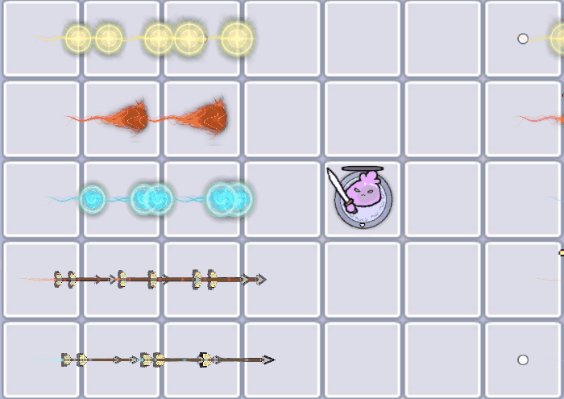
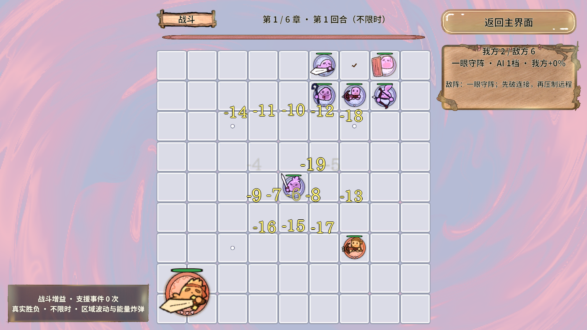
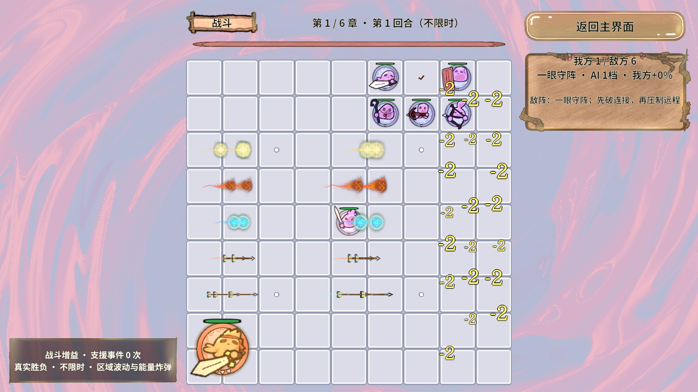
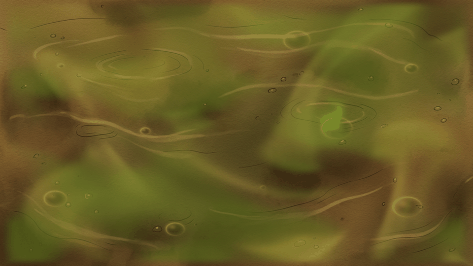
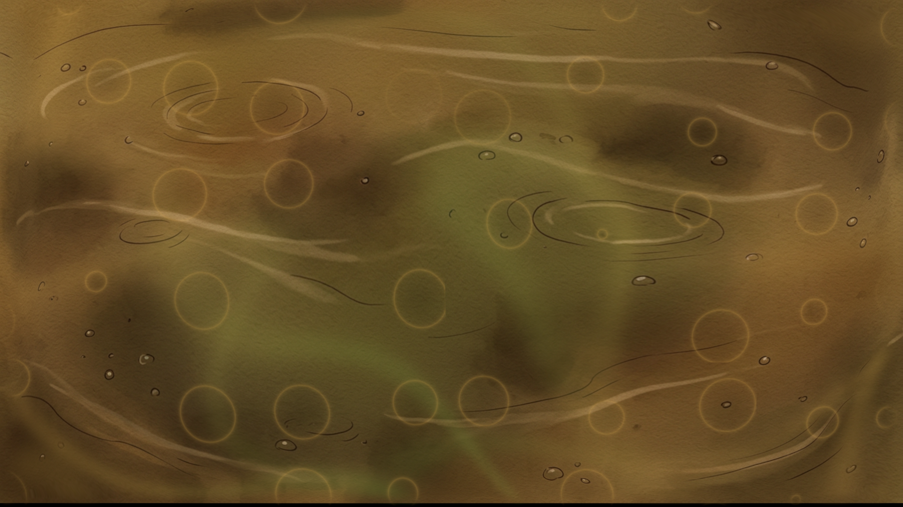
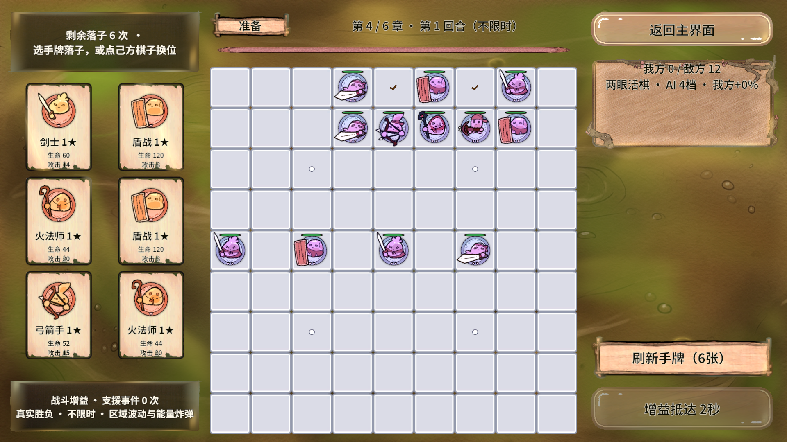
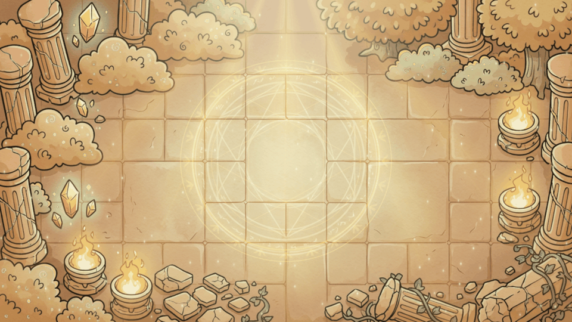
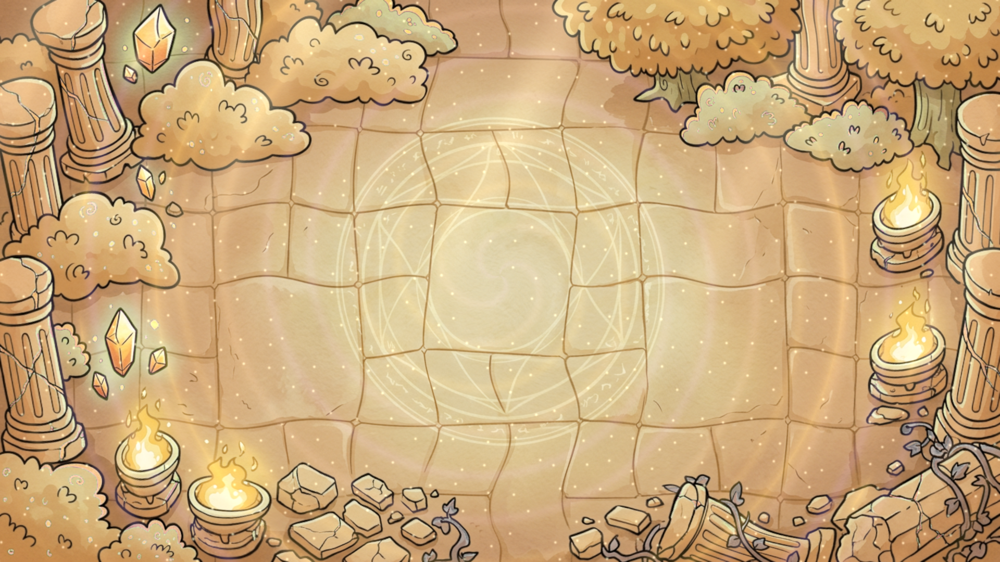
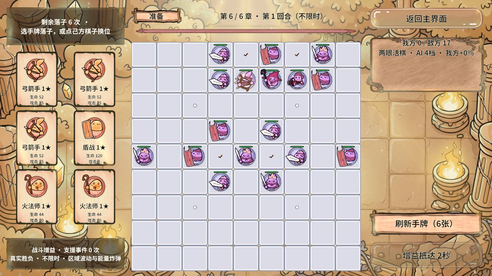

已通过桌面真实AB验证
修改前基线14
同帧合计360已落屏
已复制到StreamingAssets
真实AB冷启动与三次场景往返通过；五职业原画、共享材质、图集绑定、数量上限和回合清理通过。编辑器已退出Play，StartScene没有未保存修改，资源模式恢复为原来的直读模式。
本轮AB流程记录3697条采样断言，反馈记录3237条采样断言；数量含逐帧重复检查，不能视作独立测试用例数量。常规文字上限20，远程弹道上限35；没有为了凑数量伪造游戏伤害。
五种职业，五种弹头

| 职业 | 真实素材 | Shader表现 |
|---|---|---|
| 弓箭 | Michael J Pierce 箭矢 | 细长箭身、冷白气流拉丝、金属闪光 |
| 弩 | 同作者箭矢压短为弩矢 | 短粗弹头、暖金高速拖尾 |
| 水法 | Mumu 冰霜法球 | 青蓝寒流、脉动波纹 |
| 火法 | Cethiel 火球原画 | 暗红熔岩壳、流动金色裂纹、火舌拖尾 |
| 牧师 | Mumu 光明法球 | 金色圣环、十字光、圣光尾迹 |
素材均免费下载，作者、许可与加工记录见来源说明。实际图片进入唯一的CombatFrames图集；近战与自带特效的技能不再附加通用弹道。


数字只在同一画面帧内合并，每帧最多释放8条。满20条时优先替换攻击口号，其次替换最旧数字；极端超负载仍受有限屏幕预算约束，不能保证每一击都单独停留。战斗伤害结算本身不受显示预算影响。
第四章 · 死亡沼泽
以湖面流动为基础加入两路黏稠回流、油泥褶皱、鼓泡与破裂环；9处连续坐标排气口释放绿色腐败毒气。低雾沿泥面缓慢蔓延，避免原先分区噪声产生的方格接缝。



原画底部6行透明区通过材质UV裁去，原始图片未改。单Pass、两次原画采样，没有每帧创建粒子对象。像素验证记录
第六章 · 神圣殿堂
五束自上而下展开的金白圣光，稳定对称的双环与六角印记，缓慢旋转的外圈符文、扩散光晕与上升光尘。建筑原画保持稳定，让庄严感来自光与秩序。



单Pass、一次原画采样，没有新增后处理。像素验证记录
验证与修复记录
| 范围 | 实际结果 | 证据 |
|---|---|---|
| 修改前真实AB | 50条断言通过；文字19、弹道14 | 基线 |
| 最终PC / Android AB | 各29包，背景六包零依赖，重复/循环/漏标检查通过 | PC / Android |
| 真实AB冷启动 | 首页、选关、战斗、六手牌可画；三次进出通过 | 3697条采样断言 |
| 密集反馈 | 120次同目标合计360且模型不额外扣血；100目标控频；五职业持续齐射峰值35；packed绑定、共享材质、近战/技能过滤、归池与换回合清理通过 | 结果 / 完整调用 |
| 背景GPU与真实AB | 动态、强度0、速度0、各层开关、边缘、稳定建筑、六章切换与租约通过 | GPU / 252条背景断言 |
| 最终编辑器状态 | 编译无错误；退出Play；场景clean | 诊断 |
本轮遇到的问题与处理
图集配置第一次出现Unity暂时无法写入部分meta文件，调用标记失败；后续重新检查覆盖、实际PC与Android构建均通过。另有一次刷新后的桥接短暂离线，等待重载、重新发现后构建通过。
第一版自定义参数块覆盖了SpriteRenderer的纹理绑定，造成白色方块；已在发射时显式绑定实际图集页与UV，最终AB截图确认透明原画正常。密集验收首次把连续截图与峰值测量混在一起，未达到30条断言；已将不截屏的固定输入采样放在前段，并把反馈池预热增加到55个。最终两种资源模式都达到35条；未降低峰值要求。
环境：Windows、Unity 2022.3.15f1c1、Intel Iris Xe、Direct3D11、1920×1080。固定events场景，经正常GameFlow入场后停止自动战斗时钟，向既有表现事件入口注入确定快照；这验证真实渲染和池生命周期，不代表自然战斗每时每刻都有35条弹道。
伤害夹具请求等待60ms后检查落屏；实际检查还受帧调度影响，不能据此宣称严格60ms显示延迟。本轮每批10次事件分发最大0.107ms，仅包括事件登记，不包括渲染/GPU、Tween、文字排布或截屏，不能当作整帧耗时。原始指标。Android已验证AB构建，尚未验证手机实机帧率、发热与GC；没有零GC结论。
Revolution框架可行性结论
本轮验证了“不可变命中快照 → RevEvent → 有界公平队列 → RevPool反馈对象 → RevResManager与Sprite Atlas绑定 → 场景退出回收”的实际业务链。共享职业材质可以在现有资源和对象池契约内落地，不需要修改框架内核。
资源生成器更新了ResMap与路径常量；框架实现快照未手改。35条弹道最多105个SpriteRenderer，加上文字描边会增加透明过绘；参数块也可能影响合批，因此本次不宣称提高上限同时降低了渲染成本。规则与预算已同步到战斗性能规范。